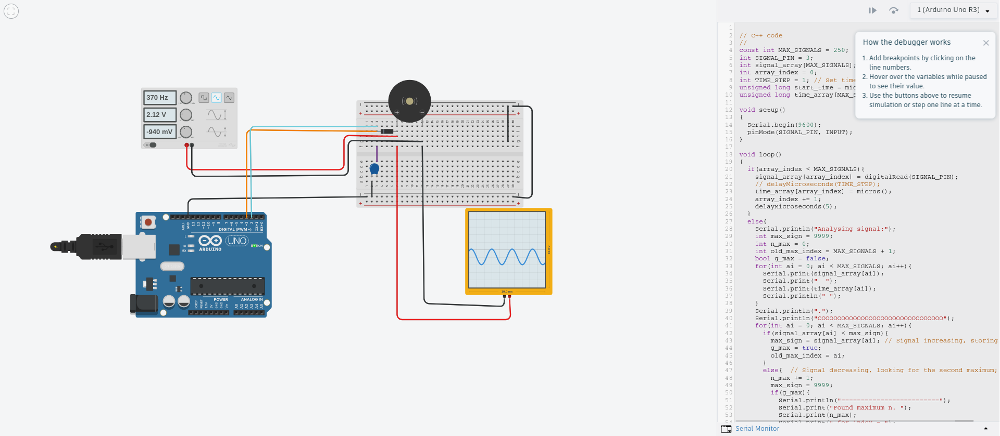

This project demonstrates PWM signal sampling and frequency estimation with an Arduino Uno. The program reads PWM signals from a digital pin, samples them at regular intervals, and estimates the signal's frequency by analyzing the rising edges of the waveform.
PIN 3PIN 2micros()The Arduino collects a fixed number of digital samples with timestamps to analyze the PWM signal.

After sampling, the Arduino estimates the frequency by calculating the time difference between the rising edges.
// period = time difference between rising edges
frequency = 1000000.0 / period; // in Hz
digitalRead and micros() introduces timing jitter.Open the circuit in Tinkercad: Signal Analysis
This project demonstrates digital signal sampling, frequency estimation, and timing limitations in microcontroller-based systems. It is ideal for educational purposes or as a demonstration of embedded programming and signal analysis techniques.